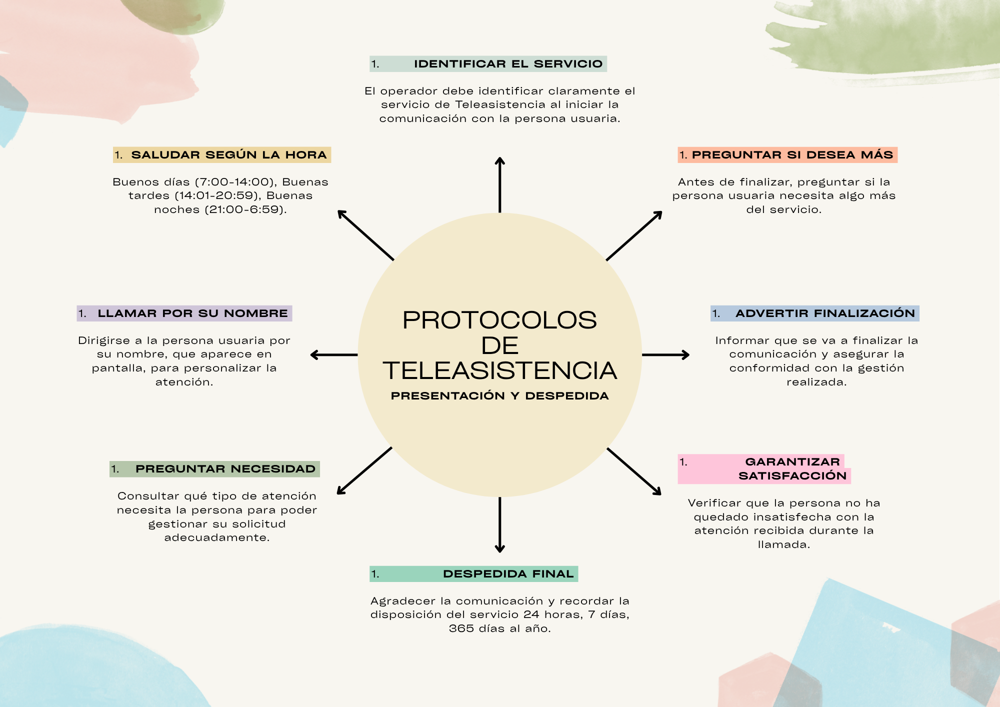

Simulación de una comunicación saliente:
La realización de esta tarea os permitirá desarrollar habilidades profesionales propias del personal operador, tales como la comunicación, la empatía, la aplicación de protocolos y la resolución de situaciones reales en Teleasistencia.
Vuestra tarea consistirá en la realización de una simulación de una situación de comunicación saliente (agenda), en la que aplicaréis todos los contenidos desarrollados en esta situación de aprendizaje. Este producto os permitirá poner en práctica cómo se realiza una comunicación saliente de manera profesional, siguiendo el protocolo y adaptándose a las características de la persona usuaria.
¿Cómo lo vamos a hacer?
El trabajo se organiza por parejas, Dentro de los grupos, cada persona asumirá un rol: Operador/a (realiza la agenda, aplica el protocolo y utiliza lenguaje profesional) o persona usuaria (representa un perfil concreto, responde de forma coherente a la situación y simula una necesidad real). Podéis intercambiar roles si lo deseáis.
Y, concretamente, ¿qué tenemos que hacer?
Tenéis que representar la situación y grabarla en vídeo. Podéis elegir entre una de estas situaciones:
- Agenda de medicación
- Agenda de seguimiento
- Agenda preventiva
- Agenda por alerta
- Seguimiento tras situación concreta
Pensad en un perfil de persona usuaria concreta que se ajuste a las necesidades de la agenda que vais a desarrollar.
La situación que simularéis y que quedará plasmada en el vídeo, debe contener lo siguiente:
- Seguir el protocolo de bienvenida (saludo adecuado, identificación del servicio...)
- Seguir el protocolo propio de la agenda (explicación del motivo de la llamada, desarrollo de la comunicación...)
- Debéis demostrar que os adaptáis al perfil de la persona usuaria (justificar verbalmente durante el vídeo por qué escogisteis esta agenda concreta y para quién es)
- Seguir el protocolo de despedida.
- A lo largo de la simulación, que exista un "realismo" profesional: que la situación sea creíble, que se apliquen los contenidos desarrollados en el aula y que utilicéis el lenguaje profesional propio.
Os recuerdo a través de esta infografía los contenidos estudiados en la UD4 sobre protocolos de bienvenida y despedida:
INFOGRAFÍA PROTOCOLOS DE BIENVENIDA Y DESPEDIDA:

Para la elaboración del vídeo, podéis utilizar cualquier herramienta digital de edición, como Capcut o Canva, o cualquier otra app de grabación con la que estéis más acostumbradas a trabajar.
Las sesiones 6 y 7 se dedicarán a esta tarea (agrupamientos, elaboración de guion, grabación y edición del vídeo y entrega a través de correo electrónico al profesor). En la sesión 8 procederemos al visionado en el aula.
¿Cómo se evaluará el trabajo?
Para la evaluación se utilizará la rúbrica que podéis consultar más abajo. La consulta de este instrumento os puede guiar en la correcta planificación y ejecución de la tarea.